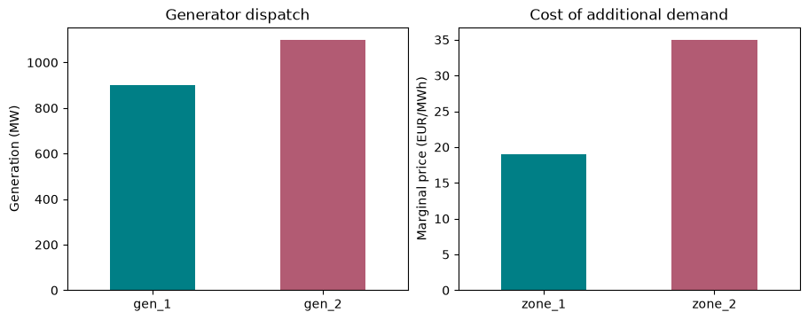
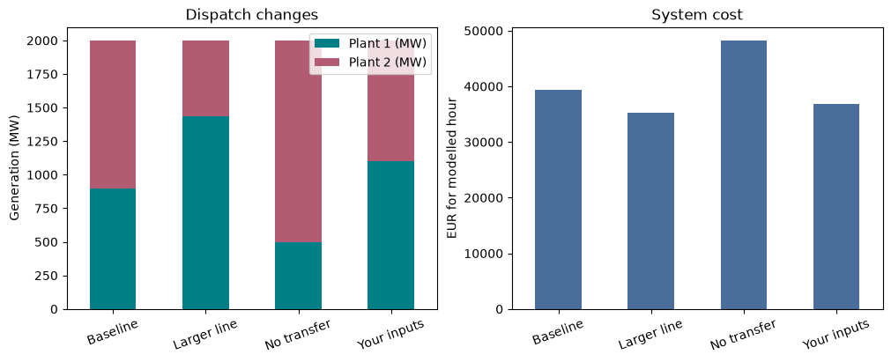

Electricity markets: generation, transfers, and prices#
PyPSA lets us describe an energy system and find an operation that minimises its specified costs. This original teaching notebook follows the two-zone question in Quickstart 1, then adds controlled experiments.
Your task#
Run the cells in order. Predict the effect of a larger transmission connection before solving it. Explain each figure in a Markdown cell. Select Python (pypsa-course).
Learning objectives#
Connect buses, generators, loads, and a line.
Distinguish capacity (MW), energy (MWh), and cost (EUR).
Explain congestion and interpret conditional marginal prices.
Change one assumption and compare results against a saved baseline.
The two zones are abstract examples, not Groningen grid areas. We model one hour with fixed demand, continuous generation, no losses, and linearised power flow. Investment, reserve requirements, start-up costs, and emissions are outside this example.
import numpy as np
import pandas as pd
import matplotlib.pyplot as plt
import pypsa
Part 1: Problem description#
(here we will use the same instructions given in Quickstart 1 - Markets from PyPSA documenation)
As in the previos example, we have here the same elements:
A Bus is a balance point where load and generation meet,
A Load consumes power,
a Generator supplies it, and
a Line exchanges power between buses.
For this system consider the following simple electricity market with two zones, each with a generator and a load. The demand in zone 1 is 500 MW and in zone 2 is 1500 MW. The generators have a nominal capacity of 2000 MW each, with cost functions defined as follows:
Input |
Zone 1 |
Zone 2 |
|---|---|---|
Demand (MW) |
500 |
1,500 |
Generator capacity (MW) |
2,000 |
2,000 |
Linear cost coefficient (EUR/MWh) |
10 |
13 |
Quadratic coefficient (EUR/(MW² h)) |
0.005 |
0.010 |
For generator output \(g\) in MW, \(a g+b g^2\) is an operating cost rate in EUR/h. Multiply by one hour to obtain EUR. The marginal cost of an extra MWh over this hour is \(a+2bg\), not just \(a\). Thus the generator in Zone 1 need not always meet all demand first.
Hence, the zone cost functions are:
Zone 1: \(C1(g1) = 10 g1 + 0.005 g1²\)
Zone 2: \(C2(g2) = 13 g2 + 0.01 g2²\)
Build the network: what each component does#
In 01 — Groningen city, one node, all generation and demand shared a bus. Here we separate them into two buses. Each zone must balance its own demand after accounting for power sent or received on the line.
In the code |
Role in this exercise |
Unit or value |
|---|---|---|
|
Container for the system and its time steps |
One snapshot representing one hour |
|
Label for alternating-current electricity |
Label |
|
One balance point per zone; nominal voltage |
110 kV |
|
Fixed withdrawal at each bus; multiplied by |
MW |
|
Dispatchable plant with fixed installed capacity |
MW |
|
Linear and quadratic coefficients of the generation cost rate |
EUR/MWh and EUR/(MW² h) |
|
Passive connection from Zone 1 to Zone 2; establishes the positive flow direction |
Bus names |
|
Line rating; bounds active power in this linear model |
Nominal MVA, used here as an MW flow limit |
|
Reactance and resistance; nonzero reactance supports the linear flow model; losses are neglected |
0.01 Ω and 0 Ω |
build_market(**settings) passes the scenario inputs to a fresh network. This keeps solved results and assumptions from one experiment from carrying into the next.
First, we create a PyPSA network#
n = pypsa.Network()
c:\miniforge3\envs\pypsa-clean\Lib\site-packages\pypsa\network\io.py:2079: FutureWarning: pandas infers the `str` dtype for string data since its version 3.0. PyPSA still converts it back to numpy object dtype on import, but will keep it from PyPSA 2.0 on. Set `pypsa.options.api.legacy_string_dtype` explicitly to suppress this warning.
new_static = _coerce_string_dtypes(new_static)
Then we add the components: energy carriers, buses, loads, generators.#
Add carrier and buses#
### Add busses
n.add("Carrier", "AC")
n.add("Bus", "zone_1", carrier="AC", v_nom=110)
n.add("Bus", "zone_2", carrier="AC", v_nom=110)
n.buses[["carrier", "v_nom"]]
| carrier | v_nom | |
|---|---|---|
| name | ||
| zone_1 | AC | 110.0 |
| zone_2 | AC | 110.0 |
Add loads (we assume, here a constant load, however, real problems have load represented through time series)
n.add("Load", "load_1", bus="zone_1", p_set=500)
n.add("Load", "load_2", bus="zone_2", p_set=1500)
n.loads[["bus", "p_set"]]
| bus | p_set | |
|---|---|---|
| name | ||
| load_1 | zone_1 | 500.0 |
| load_2 | zone_2 | 1500.0 |
Add generators
n.add(
"Generator",
"gen_1",
bus="zone_1",
carrier="AC",
p_nom=2000,
p_nom_extendable=False,
marginal_cost=10,
marginal_cost_quadratic=0.005,
)
n.add(
"Generator",
"gen_2",
bus="zone_2",
carrier="AC",
p_nom=2000,
p_nom_extendable=False,
marginal_cost=13,
marginal_cost_quadratic=0.01,
)
n.generators[["bus", "p_nom", "marginal_cost", "marginal_cost_quadratic"]]
| bus | p_nom | marginal_cost | marginal_cost_quadratic | |
|---|---|---|---|---|
| name | ||||
| gen_1 | zone_1 | 2000.0 | 10.0 | 0.005 |
| gen_2 | zone_2 | 2000.0 | 13.0 | 0.010 |
Add the line connection between the two zones. The capacity of the line, is actually as restriction of the model, so we will call its capacity as the starting line limit \( 400 [MW]\). Furthermore, the power has a positive flow going from Zone 1 to Zone 2.
line_limit_mw = 400.0
n.add(
"Line", "Connection",
bus0="zone_1",
bus1="zone_2",
x=0.01, # Series reactance, must be non-zero for AC branch for linearised power flow equations.
r=0.0, # Series resistance, must be non-zero for DC branch for linearised power flow equations.
s_nom=line_limit_mw,
)
n.lines.loc[["Connection"], ["bus0", "bus1", "x", "s_nom"]]
# Keep an unsolved copy for the scenario experiments.
template = n.copy()
From components to equations#
Inputs: \(D_1,D_2\) are demand, \(G_1,G_2\) are generator capacity, \(F\) is the line limit, and \(a_i,b_i\) are cost coefficients. All are fixed for a given run.
Decisions: \(g_1\) and \(g_2\) are generator output in MW; \(f\) is signed line flow in MW. If \(f<0\), electricity flows from Zone 2 to Zone 1.
The generator limits come from the Generator components. The transfer limit comes from the Line. The last two equations are the Bus balances: the same transfer is subtracted at its origin and added at its destination. In a two-bus network with one line there is no loop, so these equations and the line limit capture the feasible dispatch and transfer. Adding the bus balances cancels \(f\) and gives \(g_1+g_2=D_1+D_2\).
The objective multiplies a cost rate (EUR/h) by \(\Delta t=1\) h. The quadratic term makes this a quadratic programme. The marginal cost at the chosen output is \(a_i+2b_i g_i\) in EUR/MWh. Unlike the one-node exercise with constant marginal costs, the cheapest place to produce the next MWh can change as output rises.
Solve and check#
HiGHS chooses dispatch and flow. The code uses the direct interface with one solver thread and checks for an optimal termination before reading any results.
def solve(network):
status, condition = network.optimize(
solver_name="highs", io_api="direct", threads=1,
log_to_console=False, include_objective_constant=False,
)
if (status, condition) != ("ok", "optimal"):
raise RuntimeError(f"No optimal solution: {status}, {condition}")
return network
n = solve(n)
WARNING:pypsa.consistency:The following lines have zero r, which could break the linear load flow:
Index(['Connection'], dtype='object', name='name')
INFO:linopy.model: Solve problem using Highs solver
INFO:linopy.model:Solver options:
- threads: 1
- log_to_console: False
INFO:linopy.constants: Optimization successful:
Status: ok
Termination condition: optimal
Solution: 3 primals, 8 duals
Objective: 3.94e+04
Solver: highs
Runtime: 0.00s
MIP gap: inf
Dual bound: 0.00e+00
Solver model: available
Solver message: Optimal
INFO:pypsa.optimization.optimize:The shadow-prices of the constraints Generator-fix-p-lower, Generator-fix-p-upper, Line-fix-s-lower, Line-fix-s-upper were not assigned to the network.
Read the dispatch, prices, and objective#
At the baseline line limit of 400 MW, the model transfers 400 MW from Zone 1 to Zone 2. The two bus equations then give:
Zone 1: \(g_1=500+400=900\) MW.
Zone 2: \(g_2=1500-400=1100\) MW.
Substituting those outputs into \(a_i g_i+b_i g_i^2\) gives 13,050 EUR for Plant 1 and 26,400 EUR for Plant 2 over the hour, for 39,450 EUR in total.
Output |
How to read it |
|---|---|
|
Solved output for each plant and snapshot (MW). |
|
Power entering the line at |
|
Local cost of serving a small additional MWh (EUR/MWh). |
|
Total operating cost for the one-hour run (EUR). |
The optimised generators dispatch can be accessed with:
n.generators_t.p
| name | gen_1 | gen_2 |
|---|---|---|
| snapshot | ||
| now | 900.0 | 1100.0 |
Also the market clearing prices per bus:
n.buses_t.marginal_price
| name | zone_1 | zone_2 |
|---|---|---|
| snapshot | ||
| now | 19.00009 | 35.00011 |
And the he optimised flows on transmission lines can be accessed with:
n.lines_t.p1
| name | Connection |
|---|---|
| snapshot | |
| now | -400.0 |
The congestion rent can be calculated as the product of the flow on the line and the price difference between the two buses:
n.buses_t.marginal_price.eval("zone_2 - zone_1") * n.lines_t.p0["Connection"]
snapshot
now 6400.008
dtype: float64
You can set a function to read and store all results from your network as follows:
def read_results(network):
"""Read and validate the results of the solved two-zone network."""
# This exercise has one snapshot. Select it to read the hourly results.
t = network.snapshots[0]
# Read each generator's output (MW), each bus's marginal price (EUR/MWh),
# and each load's consumption (MW) at this snapshot.
generation = network.generators_t.p.loc[t]
prices = network.buses_t.marginal_price.loc[t]
loads = network.loads_t.p.loc[t]
# p0 is the power entering the line at bus0 (zone_1).
# Positive flow goes from zone_1 to zone_2; negative flow goes the other way.
flow = network.lines_t.p0.at[t, "Connection"]
# Read the line's transfer limit in this linear model.
rating = network.lines.at["Connection", "s_nom"]
# Read the objective weight, which represents one hour in this exercise.
# It converts MW into MWh when calculating the cost of a transfer.
hours = network.snapshot_weightings.at[t, "objective"]
# Check the power balance at each bus separately:
# zone_1: generation minus signed flow must equal local demand.
# zone_2: generation plus signed flow must equal local demand.
# Allow an absolute difference of 0.001 MW for solver precision.
np.testing.assert_allclose(
[generation["gen_1"] - flow, generation["gen_2"] + flow],
[loads["load_1"], loads["load_2"]],
atol=1e-3,
rtol=0,
)
# Check the line limit in either direction, using the same tolerance.
assert abs(flow) <= rating + 1e-3
return generation, prices, flow, hours
# Read the results from n after the optimisation has succeeded.
generation, prices, flow, hours = read_results(n)
# Report the signed transfer and the total operating cost for the hour.
print(f"Transfer from zone_1 to zone_2: {flow:.2f} MW")
print(f"Operating cost for the hour: EUR {n.objective:,.2f}")
Transfer from zone_1 to zone_2: 400.00 MW
Operating cost for the hour: EUR 39,450.00
Line congestion analysis#
Both plants have spare capacity (unused potential). Because the line is already full, a small extra load must be met locally.
To do that, we substitute the outputs into \(a_i+2b_i g_i\) gives 19 EUR/MWh in Zone 1 and 35 EUR/MWh in Zone 2.
These are modelled marginal values, not retail tariffs. Therefore, the lossless congestion rent (or the possivle revenue due to such bottleneck) is \(400[MW]\,(35-19)[EUR/MWh]\,(1)[h]=6{,}400\) EUR for the hour.
With a 1,000 MW capacity limit, the line only needs to carry about 933.33 MW for the prices (marginal costs) in both zones to naturally converge to the same value. If you built a bigger line beyond that, it wouldn’t lower operating costs any further because the transmission line is no longer a bottleneck.
# Congestion rent equals the energy transferred times the price difference.
# Units: MW × EUR/MWh × h = EUR.
# Positive flow is defined from zone_1 to zone_2, so use price_2 - price_1.
rent_eur = flow * (prices["zone_2"] - prices["zone_1"]) * hours
print(f"Congestion rent (or bottleneck revenue) in this hour: EUR {rent_eur:,.2f}")
# Use separate panels because dispatch and prices have different units.
fig, axes = plt.subplots(1, 2, figsize=(9, 3.5), layout="constrained")
# Left: how much power each generator produces.
generation.plot.bar(ax=axes[0], color=["#007f86", "#b25b73"], rot=0)
axes[0].set(xlabel="", ylabel="Generation (MW)", title="Generator dispatch")
# Right: the cost of serving a small increase in demand at each bus.
prices.plot.bar(ax=axes[1], color=["#007f86", "#b25b73"], rot=0)
axes[1].set(
xlabel="",
ylabel="Marginal price (EUR/MWh)",
title="Cost of additional demand",
)
plt.show()
Congestion rent (or bottleneck revenue) in this hour: EUR 6,400.01

Part 2: Extend the grid congestion analysis by changing the line capacity#
Predict, change, compare scenarios#
Compare the three named line ratings (400, 1,000 and 0 MW), holding demand and generation costs fixed. A fourth row, Your inputs, uses your editable settings. Use the transfer and price-gap columns to explain why the dispatch and total cost change. A higher rating allows more power to flow; it does not force a higher transfer.
Here define the power capacity of the line according to your research curiosity:
# Edit this value to test your own line rating without changing the reference cases.
your_line_limit_mw = 600.0 # As an example, we set the line limit to 600 MW, which is higher than the original 400 MW.
Then the values of all scenarios are defined, previous to input them into a function that would summarize implementation of each capacity limit for our electricity market.
# A rating is the maximum allowed transfer, not the actual power flow.
# The zero-rating case keeps the line in the network but prevents transfers.
ratings = {
"Baseline": 400.0,
"Larger line": 1000.0,
"No transfer": 0.0,
"Your inputs": your_line_limit_mw,
}
Here, we define a function that runs the optimisation of the energy system model for each scenario.
def scenario_row(network, name):
"""Summarise one solved scenario as a row in the comparison table."""
# Read the results and check the two bus balances and the line limit.
gen, price, transfer, duration = read_results(network)
# Record the line rating alongside the actual transfer so we can see
# whether the line is full. Report both bus prices and their difference.
return {
"Scenario": name,
"Line rating (MW)": network.lines.at["Connection", "s_nom"],
"Plant 1 (MW)": gen["gen_1"],
"Plant 2 (MW)": gen["gen_2"],
"Transfer (MW)": transfer,
"Zone 1 price (EUR/MWh)": price["zone_1"],
"Zone 2 price (EUR/MWh)": price["zone_2"],
"Price gap (EUR/MWh)": price["zone_2"] - price["zone_1"],
"Congestion rent (EUR)": (
transfer * (price["zone_2"] - price["zone_1"]) * duration
),
"Cost (EUR for hour)": network.objective,
}
rows = []
for name, rating in ratings.items():
# Zero is valid; negative or non-finite ratings are not.
if not np.isfinite(rating) or rating < 0:
raise ValueError("Use a finite, nonnegative line rating.")
# Start each run from the same unsolved network. Change only the line
# rating so differences in the results can be traced to that change.
scenario = template.copy()
scenario.lines.at["Connection", "s_nom"] = rating
# Solve the scenario, then store its results as one row.
rows.append(scenario_row(solve(scenario), name))
# Use the scenario names as row labels. Round only the displayed values.
comparison = pd.DataFrame(rows).set_index("Scenario")
print(comparison.round(2))
# A larger line permits every dispatch that was feasible with a smaller line.
# With no line investment cost in this model, relaxing the transfer limit
# cannot increase the minimum operating cost. Allow 0.001 EUR for rounding.
cost = comparison["Cost (EUR for hour)"]
assert cost["Larger line"] <= cost["Baseline"] + 1e-3
assert cost["Baseline"] <= cost["No transfer"] + 1e-3
WARNING:pypsa.consistency:The following lines have zero r, which could break the linear load flow:
Index(['Connection'], dtype='object', name='name')
INFO:linopy.model: Solve problem using Highs solver
INFO:linopy.model:Solver options:
- threads: 1
- log_to_console: False
INFO:linopy.constants: Optimization successful:
Status: ok
Termination condition: optimal
Solution: 3 primals, 8 duals
Objective: 3.94e+04
Solver: highs
Runtime: 0.00s
MIP gap: inf
Dual bound: 0.00e+00
Solver model: available
Solver message: Optimal
INFO:pypsa.optimization.optimize:The shadow-prices of the constraints Generator-fix-p-lower, Generator-fix-p-upper, Line-fix-s-lower, Line-fix-s-upper were not assigned to the network.
WARNING:pypsa.consistency:The following lines have zero r, which could break the linear load flow:
Index(['Connection'], dtype='object', name='name')
INFO:linopy.model: Solve problem using Highs solver
INFO:linopy.model:Solver options:
- threads: 1
- log_to_console: False
INFO:linopy.constants: Optimization successful:
Status: ok
Termination condition: optimal
Solution: 3 primals, 8 duals
Objective: 3.52e+04
Solver: highs
Runtime: 0.00s
MIP gap: inf
Dual bound: 0.00e+00
Solver model: available
Solver message: Optimal
INFO:pypsa.optimization.optimize:The shadow-prices of the constraints Generator-fix-p-lower, Generator-fix-p-upper, Line-fix-s-lower, Line-fix-s-upper were not assigned to the network.
WARNING:pypsa.consistency:The following lines have zero r, which could break the linear load flow:
Index(['Connection'], dtype='object', name='name')
INFO:linopy.model: Solve problem using Highs solver
INFO:linopy.model:Solver options:
- threads: 1
- log_to_console: False
INFO:linopy.constants: Optimization successful:
Status: ok
Termination condition: optimal
Solution: 3 primals, 8 duals
Objective: 4.82e+04
Solver: highs
Runtime: 0.00s
MIP gap: inf
Dual bound: 0.00e+00
Solver model: available
Solver message: Optimal
INFO:pypsa.optimization.optimize:The shadow-prices of the constraints Generator-fix-p-lower, Generator-fix-p-upper, Line-fix-s-lower, Line-fix-s-upper were not assigned to the network.
WARNING:pypsa.consistency:The following lines have zero r, which could break the linear load flow:
Index(['Connection'], dtype='object', name='name')
INFO:linopy.model: Solve problem using Highs solver
INFO:linopy.model:Solver options:
- threads: 1
- log_to_console: False
INFO:linopy.constants: Optimization successful:
Status: ok
Termination condition: optimal
Solution: 3 primals, 8 duals
Objective: 3.68e+04
Solver: highs
Runtime: 0.00s
MIP gap: inf
Dual bound: 0.00e+00
Solver model: available
Solver message: Optimal
INFO:pypsa.optimization.optimize:The shadow-prices of the constraints Generator-fix-p-lower, Generator-fix-p-upper, Line-fix-s-lower, Line-fix-s-upper were not assigned to the network.
Line rating (MW) Plant 1 (MW) Plant 2 (MW) Transfer (MW) \
Scenario
Baseline 400.0 900.00 1100.00 400.00
Larger line 1000.0 1433.33 566.67 933.33
No transfer 0.0 500.00 1500.00 0.00
Your inputs 600.0 1100.00 900.00 600.00
Zone 1 price (EUR/MWh) Zone 2 price (EUR/MWh) \
Scenario
Baseline 19.00 35.00
Larger line 24.33 24.33
No transfer 15.00 43.00
Your inputs 21.00 31.00
Price gap (EUR/MWh) Congestion rent (EUR) Cost (EUR for hour)
Scenario
Baseline 16.0 6400.01 39450.00
Larger line 0.0 0.09 35183.33
No transfer 28.0 0.00 48250.00
Your inputs 10.0 5999.99 36850.00
We then plot the results of our optimisation for each scenario in order to visualise and analyse them.
fig, axes = plt.subplots(1, 2, figsize=(10, 4), layout="constrained")
# Left: stack the two plants' outputs. Total demand is the same in every
# scenario, so compare each plant's share of the total bar.
comparison[["Plant 1 (MW)", "Plant 2 (MW)"]].plot.bar(
stacked=True, ax=axes[0], color=["#007f86", "#b25b73"], rot=20
)
axes[0].set(ylabel="Generation (MW)", xlabel="", title="Dispatch changes")
# Right: compare the total operating cost of serving demand for one hour.
comparison["Cost (EUR for hour)"].plot.bar(
ax=axes[1], color="#496e9c", rot=20
)
axes[1].set(ylabel="EUR for modelled hour", xlabel="", title="System cost")
plt.show()

A second experiment: higher local generation cost#
Change only zone2_linear_cost from 13 to 20 in settings, then rerun from the input cell. Keep demand and the line limit at baseline values. Does congestion limit how much the other zone can help? Explain the difference between a change in operating cost and a change in installed capacity.
Optional practice#
Set
demand_multiplierto 1.1, keeping all other settings fixed. Predict whether the line remains congested.Compute each bus balance independently, using generation, local demand, and signed line flow.
Explain why reinforcing the line can reduce operating cost here, while deciding whether to build it also requires an investment cost.
Sources and reuse#
The initial problem is credited to PyPSA Quickstart 1. The baseline/experiment comparison approach is informed by the supplied Jansen scenario-analysis lesson. This is a small classroom model, not a rerun of its South African networks. Code in this notebook is supplied under AGPL-3.0-or-later; retain attribution. See SOURCES.md in the teaching package.